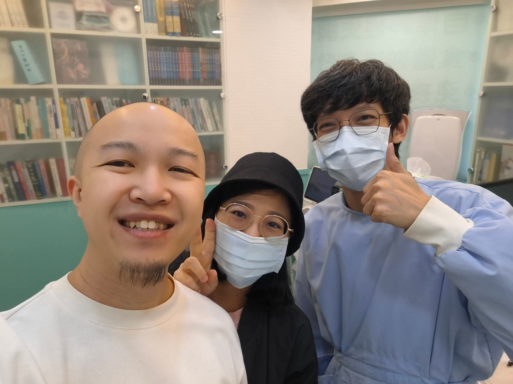

診間裡的時光機：跨越十年的重逢，用專業回敬當年的祝福
【 診間裡的時光機：跨越十年的重逢，用專業回敬當年的祝福 】
今天的診間，來了一位我大學時代的老朋友，帶著剛生產完的太太一起來。
「大學」，是個聽起來已經有些遙遠的時代。當年，他是一起在「台大中友會」揮灑青春、揮霍時光的好玩伴之一。
印象中，我們上一次見面，是我即將畢業的那一年。
還記得那一天在台大的小小福，他非常真誠地說想給我一個祝福，便帶著我一起向他的主耶穌祈禱。我個人雖然沒有特定的宗教信仰，但當晚那份純粹又真心的祈願，讓我深深感動，一直都記到現在。
那天之後，我們便各自往不同的人生道路分道揚鑣。
再見面，就已是十多年後的今天。
現在的他，是一位非常成功的「專業升大學講師」，專門幫助高中生探索自我、找到符合性向與興趣的大學科系。能改變許多年輕學子認識世界的方式，引導他們找到方向，這絕對是一項功德無量的專業！
回想當年我們還在學校時，Yahoo 即時通還是主流，FB 才剛剛起步，更別提什麼 IG 或 Threads 了。真心感謝這個 e 世代網路社群的發達，讓失聯多年的我們能再次搭上線。
看著他帶著妻小來找我，心裡滿是觸動。能透過現在的醫療專業能力，幫助身邊的朋友與他所愛的人，這正是我當初決心報考學士後中醫的初衷之一。如今能真真實實地幫上一點忙，真的是我莫大的榮幸。
轉眼間，我們都多了一個「老爸」的身份，不再是當年那個年輕熱血、青春無敵的少年仔了。
有妻有小要照顧，更得先把自己的身體顧好。因為從步入婚姻的那一刻起，少年仔就不再只是「一個人」，肩膀上的承擔與責任都變得更重了。
很開心能在十多年後的這個人生節點再次碰面。
當年，是你為即將畢業的我祈禱；今天，換我在診間裡送上最誠摯的祝福：
祝福你們闔家平安、身體健康，也祝可愛的寶寶天天開心、頭好壯壯地長大！
東門中醫 太初中醫診所
中醫師 黃彥鈞
